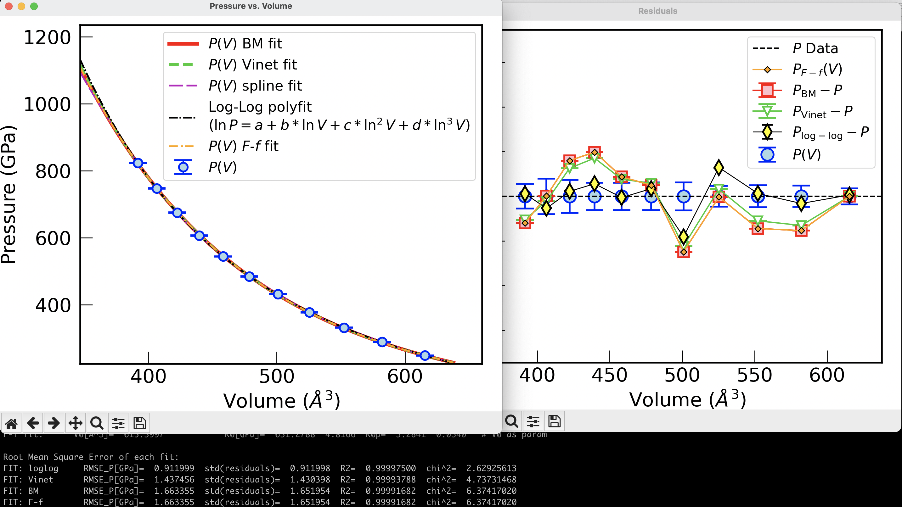

fit_EOS#
This is code that allows to fit Birch-Murnaghan, Vinet, and polynomial log-log functional forms to Pressure-Volume (\(P\text{-}V\)) data provided by the user. The code uses a the curve_fit from scipy.optimize in combination with InterpolatedUnivariateSpline from scipy.interpolate. The code supports error bars \(\delta P_i\) in the pressure \(P_i\), which changes the weights in the fitting to \(w_i=1/\delta P_i\). The output provides the fitting parameters for each of the functional forms with their respective errors from the covariance matrix. Different indicators are provided to determine which fit worked better, including RMSE, standard deviation of the residuals, \(R^2\), and \(\chi^2\) (see below).
Download the code#
Download the code here.

Fitting Equations of State using Vinet / Birch-Murnaghan / log-log to P-V data#
Birch-Murnhagan EOS#
The Birch-Murnaghan EOS of 3rd order is given by
and the Birch-Murnhagan EOS of 4th order is given by
where \(K_0\equiv K(V_0)\), \(K_0'\equiv K'(P=0)\), and \(K_0'' \equiv K''(P=0)\), with \(K'(P)\equiv \left(\frac{\partial K}{\partial P}\right)\) and \(K''(P)\equiv \left(\frac{\partial^2 K}{\partial P^2}\right)\). Note that the derivatives are taken with respect to pressure, not volume. In fact, \(K'(P)= -K'(V)V/K(V)\). Further reading:
The normalized pressure EOS: \(F-f\)#
Since pressure can be written in terms of the finite strain \(f\),
where \(f= \frac{1}{2}( (V_0/V)^{2/3} -1 )\) is the Eulerian strain, the normalized pressure, \(F\) (not to be confused with Helmhotz free energy), is a simple linear or quadratic function of the strain,
where \(\xi=(3/4)(K_0'-4)\) and \(\zeta=(3/8)[K_0K_0''+K_0'(K_0'-7)+143/9]\). A simple (weighted) linear fit to \(F(f)\) is equivalent to a third-order Birch-Murnaghan EOS, but it may be more precise and convinient because the intercept is \(K_0\) and slope is proportional to \(K_0'\). Further reading:
Tip
The code presented here is meant to fit \(T>0\) isotherms (where \(P(V_0)>0\)) and it can deal with either volumes in Å3 (\(V\)) or normalized volumes (\(V/V_0\)) as arguments. If the volumes are NOT normalized (they are not between 0 and 1), the code will divide the volumes by \(V_0={\rm max}(V)\) and shift down the values of \(P\) by \(P_{\rm shift}={\rm min}(P)\), such that \(P_{th}\equiv P-P_{\rm shift}\) looks like a zero-Kelvin isotherm that satisfies \(P_{th}(V_0) = 0\) by definition. Therefore, the \(F-f\) fit is performed over \(P_{th}\) rather than \(P\), using all points except \((P_0,V_0)\) and satisfies \(P(V_0)= {\rm min}(P)\) by construction.
Vinet EOS#
The Vinet EOS is given by
I also provide a new log-log polynomial EOS fit: $\(\ln V = a + b\ln P + c(\ln P)^2 + d(\ln P)^3 \Rightarrow V(P) = {\rm e}^aP^{b+c\ln P+d(\ln P)^2}.\)$
Further reading:
Reported Errors:#
residuals = \(P_{\rm fit}(V) - P\)
\(\sigma\) = standard deviation of residuals
RMSE = \(\sqrt{\text{mean}({\rm residuals}^2)}\)
\(R^2 = 1 - \dfrac{\sum ({\rm residuals}^2)}{\sum (P - \text{mean}(P))^2}\)
\(\chi^2 = \sum \left( \dfrac{{\rm residuals}^2}{dP^2} \right)\)
\(\chi^2_{\nu} = \frac{\chi^2 }{ (N - p)}\) \(\quad\) (\(\chi^2_{\nu}\): Reduced \(\chi^2\); \(N\): total number of data points; \(p\): number of fitting parameters)
Interpreting Reduced \(\chi^2\):#
\(\chi^2_{\nu} \approx 1\): model is consistent with data within error bars
\(\chi^2_{\nu} < 1\): possible overfitting or overestimated uncertainties
\(\chi^2_{\nu} > 1\): model may be inadequate or error bars underestimated
Among multiple models, the one with \(\chi^2_{\nu}\) closest to 1 is generally preferred.
Executing the code#
Help#
Running the code without arguments displays the help message:
./fit_EOS.py
**** FITTING EOS ****
by Felipe Gonzalez [Berkeley 05-19-2023]
This code fits an isotherm using Birch-Murnhagan, Vinet, and log-log [Berkeley 05-19-23]
Usage: ./fit_EOS.py EOS_Fe_sol_6000K.dat
Usage: ./fit_EOS.py EOS_Fe_sol_6000K.dat V[A^3]-col P[GPa]-col P_error-col
Usage: ./fit_EOS.py EOS_Fe_sol_6000K.dat 6 12 13
Usage: ./fit_EOS.py EOS_H2O_liq_7000K.dat 6 12 13 --BM4 --V0-as-param
Usage: ./fit_EOS.py ... -p ... --> print V(P)
Usage: ./fit_EOS.py ... --test ... --> deleting-points performance test
Usage: ./fit_EOS.py ... --noplots --> don't plot
Usage: ./fit_EOS.py ... --BM2 --> Birch-Murnaghan 2th order
Usage: ./fit_EOS.py ... --BM3 --> Birch-Murnaghan 3th order (default)
Usage: ./fit_EOS.py ... --BM4 --> Birch-Murnaghan 4th order
Usage: ./fit_EOS.py ... --V0-as-param --> Treat V0 as another fitting parameter [ do not force the default P(V0) = P0, where P0=min(P), V0=max(P) ]
No arguments assumes V[A^3]-col= 6, P[GPa]-col= 12, P_error-col= 13
Example: Equation of state of water at 7000 K#
Consider you have the EOS of water tabulated in a plain text file, EOS_H2O_liq_7000K.dat, and volumes, pressures, and pressure errors are in colums 6, 12, and 13, respectively:
cat EOS_H2O_liq_7000K.dat
H2O001 72O+144H N= 216 V[A^3]= 615.399662 rho[g/cc]= 3.5 T[K]= 7000 P[GPa]= 248.553 0.448 E[Ha]= -14.990529 0.064178 t= 0.5 0.4
H2O002 72O+144H N= 216 V[A^3]= 582.134815 rho[g/cc]= 3.7 T[K]= 7000 P[GPa]= 288.881 0.593 E[Ha]= -13.635456 0.069719 t= 0.5 0.4
H2O003 72O+144H N= 216 V[A^3]= 552.281748 rho[g/cc]= 3.9 T[K]= 7000 P[GPa]= 331.785 0.617 E[Ha]= -12.290564 0.056398 t= 0.5 0.4
H2O004 72O+144H N= 216 V[A^3]= 525.341176 rho[g/cc]= 4.1 T[K]= 7000 P[GPa]= 377.525 0.582 E[Ha]= -10.942243 0.049417 t= 0.5 0.4
H2O005 72O+144H N= 216 V[A^3]= 500.906701 rho[g/cc]= 4.3 T[K]= 7000 P[GPa]= 432.452 0.78 E[Ha]= -8.923608 0.086511 t= 0.5 0.4
H2O006 72O+144H N= 216 V[A^3]= 478.644181 rho[g/cc]= 4.5 T[K]= 7000 P[GPa]= 484.784 0.778 E[Ha]= -7.411852 0.093474 t= 0.5 0.4
H2O007 72O+144H N= 216 V[A^3]= 458.276344 rho[g/cc]= 4.7 T[K]= 7000 P[GPa]= 544.4 0.767 E[Ha]= -5.482341 0.081054 t= 0.5 0.4
H2O008 72O+144H N= 216 V[A^3]= 439.571187 rho[g/cc]= 4.9 T[K]= 7000 P[GPa]= 606.946 0.763 E[Ha]= -3.557931 0.076483 t= 0.5 0.4
H2O009 72O+144H N= 216 V[A^3]= 422.333102 rho[g/cc]= 5.1 T[K]= 7000 P[GPa]= 675.005 0.921 E[Ha]= -1.334811 0.096554 t= 0.5 0.4
H2O010 72O+144H N= 216 V[A^3]= 406.396003 rho[g/cc]= 5.3 T[K]= 7000 P[GPa]= 748.008 0.993 E[Ha]= 0.888587 0.129627 t= 0.5 0.4
H2O011 72O+144H N= 216 V[A^3]= 391.617966 rho[g/cc]= 5.5 T[K]= 7000 P[GPa]= 823.765 0.685 E[Ha]= 2.938162 0.093997 t= 0.5 0.4
Executing the code with an EOS#
./fit_EOS.py EOS_H2O_liq_7000K.dat 6 12 13
[!IMPORTANT] If you have error bars in the measured volumes, you can pass them as an additional column (say, column 7) after the volume column. These error bars will be considered for the \(F-f\) fit.
./fit_EOS.py EOS_H2O_liq_7000K.dat 6 7 12 13
**** FITTING EOS ****
by Felipe Gonzalez [Berkeley 05-19-2023]
#EOS Data: EOS_H2O_liq_7000K.dat
i= 0 V[A^3]= 615.3997 P[GPa]= 248.5530 0.4480
i= 1 V[A^3]= 582.1348 P[GPa]= 288.8810 0.5930
i= 2 V[A^3]= 552.2817 P[GPa]= 331.7850 0.6170
i= 3 V[A^3]= 525.3412 P[GPa]= 377.5250 0.5820
i= 4 V[A^3]= 500.9067 P[GPa]= 432.4520 0.7800
i= 5 V[A^3]= 478.6442 P[GPa]= 484.7840 0.7780
i= 6 V[A^3]= 458.2763 P[GPa]= 544.4000 0.7670
i= 7 V[A^3]= 439.5712 P[GPa]= 606.9460 0.7630
i= 8 V[A^3]= 422.3331 P[GPa]= 675.0050 0.9210
i= 9 V[A^3]= 406.3960 P[GPa]= 748.0080 0.9930
i= 10 V[A^3]= 391.6180 P[GPa]= 823.7650 0.6850
Birch-Murnaghan of degree 3
BM fit: V0[A^3]= 615.3997 K0[GPa]= 631.2788 1.7987 K0p= 3.2841 0.0106 # Forcing P(V0)=P0 = min(P)
BM fit: V0[A^3]= 1230.7993 13.6088 K0[GPa]= 101.5101 3.9648 K0p= 3.6423 0.0108 # V0 as param
Vinet fit: V0[A^3]= 615.3997 K0[GPa]= 637.4325 2.2784 K0p= 3.2031 0.0197 # Forcing P(V0)=P0 = min(P)
Vinet fit: V0[A^3]= 1846.1990 128.8517 K0[GPa]= 17.0905 5.2243 K0p= 5.3649 0.2220 # V0 as param
Root Mean Square Error of each fit:
FIT: BM RMSE_P[GPa]= 1.663355 std(residuals)= 1.651954 R2= 0.99991682 chi^2= 6.37417020
FIT: Vinet RMSE_P[GPa]= 1.437456 std(residuals)= 1.430398 R2= 0.99993788 chi^2= 4.73731468
FIT: loglog RMSE_P[GPa]= 0.986809 std(residuals)= 0.986807 R2= 0.99997073 chi^2= 3.00585571
Plots generated#
Two figures are generated by the code, using matplotlib: the original \(P\)-\(V\) data with errors together with all the fitting curves, and a figure with the differences \(P_{\rm fit}-P_{\rm data}\) (residuals) vs. volume. This provides a visual inspection of how far apart the predicted pressures are from the measured pressures. Compare this with the \(\chi^2\) diagnostics provided in the output.


Volume at P_Target#
Adding a target pressure
./fit_EOS.py EOS_H2O_liq_7000K.dat 6 12 13 400.0 --noplots --BM4
Volume at P_Target
P_Target[GPa]= 400.00 V_BM[A^3]= 514.7890
P_Target[GPa]= 400.00 V_Vinet[A^3]= 514.3874
P_Target[GPa]= 400.00 V_loglog[A^3]= 514.7888
P_Target[GPa]= 400.00 V_spline[A^3]= 514.7242
PBest[GPa]= 377.5
Integral from P1[GPa]= -1.00 to P_Target[GPa]= 400.00: ∆G[eV]= 1840.264831853906
\(\Delta G=\int_{P_1}^{P_{\rm Target}} V(P)dP = G(P_{\rm Target})- G(P_1)\)#
As you can see above, providing the target pressure already provides the value of the integral for \(\Delta G\), but the default value is \(P_1= -1\) GPa. To change the value of \(P_1\), use --P1 and a value (integer or float) to the right:
./fit_EOS.py EOS_H2O_liq_7000K.dat 6 12 13 400.0 --noplots --BM4 --P1 390
Volume at P_Target
P_Target[GPa]= 400.00 V_BM[A^3]= 514.7890
P_Target[GPa]= 400.00 V_Vinet[A^3]= 514.3874
P_Target[GPa]= 400.00 V_loglog[A^3]= 514.7888
P_Target[GPa]= 400.00 V_spline[A^3]= 514.7242
PBest[GPa]= 377.5
Integral from P1[GPa]= 390.00 to P_Target[GPa]= 400.00: ∆G[eV]= 32.283297304166
The value of \(\Delta G\) is provided in eV, provided that \(P\) is in GPa and \(V\) is in Å3.
Deleting points test: which fit performs better?#
Using the --test option, the code will remove one point from the input dataset and refit the data. Since the removed point \((P_0,V_0)\) contains the known volume, the fit that better predicts \(V_0\) for fixed \(P_0\) is, in principle, the most reliable. A second round of tests removing two random datapoints from the dataset is performed in order to test the consistency:
./fit_EOS.py EOS_H2O_liq_7000K.dat 6 12 13 --noplots --test
**** FITTING EOS ****
by Felipe Gonzalez [Berkeley 05-19-2023]
#EOS Data: EOS_H2O_liq_7000K.dat
i= 0 V[A^3]= 615.3997 P[GPa]= 248.5530 0.4480
i= 1 V[A^3]= 582.1348 P[GPa]= 288.8810 0.5930
i= 2 V[A^3]= 552.2817 P[GPa]= 331.7850 0.6170
i= 3 V[A^3]= 525.3412 P[GPa]= 377.5250 0.5820
i= 4 V[A^3]= 500.9067 P[GPa]= 432.4520 0.7800
i= 5 V[A^3]= 478.6442 P[GPa]= 484.7840 0.7780
i= 6 V[A^3]= 458.2763 P[GPa]= 544.4000 0.7670
i= 7 V[A^3]= 439.5712 P[GPa]= 606.9460 0.7630
i= 8 V[A^3]= 422.3331 P[GPa]= 675.0050 0.9210
i= 9 V[A^3]= 406.3960 P[GPa]= 748.0080 0.9930
i= 10 V[A^3]= 391.6180 P[GPa]= 823.7650 0.6850
Birch-Murnaghan of degree 3
BM fit: V0[A^3]= 615.3997 K0[GPa]= 631.2788 1.7987 K0p= 3.2841 0.0106 # Forcing P(V0)=P0 = min(P)
BM fit: V0[A^3]= 1230.7993 13.6088 K0[GPa]= 101.5101 3.9648 K0p= 3.6423 0.0108 # V0 as param
Vinet fit: V0[A^3]= 615.3997 K0[GPa]= 637.4325 2.2784 K0p= 3.2031 0.0197 # Forcing P(V0)=P0 = min(P)
Vinet fit: V0[A^3]= 1846.1990 128.8517 K0[GPa]= 17.0905 5.2243 K0p= 5.3649 0.2220 # V0 as param
Root Mean Square Error of each fit:
FIT: BM RMSE_P[GPa]= 1.663355 std(residuals)= 1.651954 R2= 0.99991682 chi^2= 6.37417020
FIT: Vinet RMSE_P[GPa]= 1.437456 std(residuals)= 1.430398 R2= 0.99993788 chi^2= 4.73731468
FIT: loglog RMSE_P[GPa]= 0.986809 std(residuals)= 0.986807 R2= 0.99997073 chi^2= 3.00585571
# DELETING POINTS TEST: removing one by one
P0[GPa]= 288.88 V0[A^3]= 582.13 V_BM[A^3]= 580.62 V_Vinet[A^3]= 580.83 V_loglog[A^3]= 581.95 V_BM_err[%]= -0.260 V_Vinet_err[%]= -0.223 V_loglog_err[%]= -0.032
P0[GPa]= 331.79 V0[A^3]= 552.28 V_BM[A^3]= 551.05 V_Vinet[A^3]= 551.32 V_loglog[A^3]= 552.61 V_BM_err[%]= -0.223 V_Vinet_err[%]= -0.175 V_loglog_err[%]= 0.060
P0[GPa]= 377.52 V0[A^3]= 525.34 V_BM[A^3]= 525.32 V_Vinet[A^3]= 525.61 V_loglog[A^3]= 526.54 V_BM_err[%]= -0.004 V_Vinet_err[%]= 0.051 V_loglog_err[%]= 0.229
P0[GPa]= 432.45 V0[A^3]= 500.91 V_BM[A^3]= 499.34 V_Vinet[A^3]= 499.48 V_loglog[A^3]= 499.46 V_BM_err[%]= -0.313 V_Vinet_err[%]= -0.285 V_loglog_err[%]= -0.289
P0[GPa]= 484.78 V0[A^3]= 478.64 V_BM[A^3]= 478.92 V_Vinet[A^3]= 478.97 V_loglog[A^3]= 478.69 V_BM_err[%]= 0.058 V_Vinet_err[%]= 0.068 V_loglog_err[%]= 0.010
P0[GPa]= 544.40 V0[A^3]= 458.28 V_BM[A^3]= 458.70 V_Vinet[A^3]= 458.64 V_loglog[A^3]= 458.17 V_BM_err[%]= 0.091 V_Vinet_err[%]= 0.079 V_loglog_err[%]= -0.024
P0[GPa]= 606.95 V0[A^3]= 439.57 V_BM[A^3]= 440.39 V_Vinet[A^3]= 440.26 V_loglog[A^3]= 439.90 V_BM_err[%]= 0.186 V_Vinet_err[%]= 0.158 V_loglog_err[%]= 0.076
P0[GPa]= 675.00 V0[A^3]= 422.33 V_BM[A^3]= 422.88 V_Vinet[A^3]= 422.76 V_loglog[A^3]= 422.59 V_BM_err[%]= 0.129 V_Vinet_err[%]= 0.101 V_loglog_err[%]= 0.061
P0[GPa]= 748.01 V0[A^3]= 406.40 V_BM[A^3]= 406.40 V_Vinet[A^3]= 406.33 V_loglog[A^3]= 406.33 V_BM_err[%]= 0.001 V_Vinet_err[%]= -0.017 V_loglog_err[%]= -0.015
P0[GPa]= 823.76 V0[A^3]= 391.62 V_BM[A^3]= 390.57 V_Vinet[A^3]= 390.84 V_loglog[A^3]= 391.23 V_BM_err[%]= -0.268 V_Vinet_err[%]= -0.200 V_loglog_err[%]= -0.098
BEST SCORES: {'BM': 2, 'Vinet': 1, 'loglog': 7} out of 10
WORST SCORES: {'BM': 7, 'Vinet': 2, 'loglog': 1} out of 10
BEST FOR EXTRAPOLATIONS: loglog
Overall scores: {'BM': -5, 'Vinet': -1, 'loglog': 6}
Best predictor: loglog
# DELETING TWO RANDOM POINTS TEST: (P0,V0) is one of them
P0[GPa]= 484.78 V0[A^3]= 478.64 V_BM[A^3]= 478.79 V_Vinet[A^3]= 478.86 V_loglog[A^3]= 478.73 V_BM_err[%]= 0.030 V_Vinet_err[%]= 0.044 V_loglog_err[%]= 0.018
P0[GPa]= 331.79 V0[A^3]= 552.28 V_BM[A^3]= 550.97 V_Vinet[A^3]= 551.23 V_loglog[A^3]= 552.59 V_BM_err[%]= -0.237 V_Vinet_err[%]= -0.191 V_loglog_err[%]= 0.055
P0[GPa]= 331.79 V0[A^3]= 552.28 V_BM[A^3]= 550.79 V_Vinet[A^3]= 551.04 V_loglog[A^3]= 552.18 V_BM_err[%]= -0.269 V_Vinet_err[%]= -0.225 V_loglog_err[%]= -0.018
P0[GPa]= 675.00 V0[A^3]= 422.33 V_BM[A^3]= 423.03 V_Vinet[A^3]= 422.88 V_loglog[A^3]= 422.78 V_BM_err[%]= 0.164 V_Vinet_err[%]= 0.129 V_loglog_err[%]= 0.105
P0[GPa]= 544.40 V0[A^3]= 458.28 V_BM[A^3]= 458.92 V_Vinet[A^3]= 458.80 V_loglog[A^3]= 458.28 V_BM_err[%]= 0.140 V_Vinet_err[%]= 0.115 V_loglog_err[%]= 0.001
P0[GPa]= 675.00 V0[A^3]= 422.33 V_BM[A^3]= 422.91 V_Vinet[A^3]= 422.79 V_loglog[A^3]= 422.60 V_BM_err[%]= 0.136 V_Vinet_err[%]= 0.108 V_loglog_err[%]= 0.064
P0[GPa]= 331.79 V0[A^3]= 552.28 V_BM[A^3]= 550.79 V_Vinet[A^3]= 551.04 V_loglog[A^3]= 552.18 V_BM_err[%]= -0.269 V_Vinet_err[%]= -0.225 V_loglog_err[%]= -0.018
P0[GPa]= 432.45 V0[A^3]= 500.91 V_BM[A^3]= 499.40 V_Vinet[A^3]= 499.52 V_loglog[A^3]= 499.46 V_BM_err[%]= -0.300 V_Vinet_err[%]= -0.276 V_loglog_err[%]= -0.288
P0[GPa]= 606.95 V0[A^3]= 439.57 V_BM[A^3]= 440.40 V_Vinet[A^3]= 440.27 V_loglog[A^3]= 439.90 V_BM_err[%]= 0.189 V_Vinet_err[%]= 0.158 V_loglog_err[%]= 0.076
P0[GPa]= 331.79 V0[A^3]= 552.28 V_BM[A^3]= 550.79 V_Vinet[A^3]= 551.04 V_loglog[A^3]= 552.18 V_BM_err[%]= -0.269 V_Vinet_err[%]= -0.225 V_loglog_err[%]= -0.018
P0[GPa]= 331.79 V0[A^3]= 552.28 V_BM[A^3]= 550.97 V_Vinet[A^3]= 551.23 V_loglog[A^3]= 552.59 V_BM_err[%]= -0.237 V_Vinet_err[%]= -0.191 V_loglog_err[%]= 0.055
P0[GPa]= 606.95 V0[A^3]= 439.57 V_BM[A^3]= 440.50 V_Vinet[A^3]= 440.35 V_loglog[A^3]= 439.90 V_BM_err[%]= 0.212 V_Vinet_err[%]= 0.176 V_loglog_err[%]= 0.076
P0[GPa]= 331.79 V0[A^3]= 552.28 V_BM[A^3]= 551.05 V_Vinet[A^3]= 551.32 V_loglog[A^3]= 552.62 V_BM_err[%]= -0.223 V_Vinet_err[%]= -0.174 V_loglog_err[%]= 0.061
P0[GPa]= 748.01 V0[A^3]= 406.40 V_BM[A^3]= 406.48 V_Vinet[A^3]= 406.39 V_loglog[A^3]= 406.41 V_BM_err[%]= 0.021 V_Vinet_err[%]= -0.001 V_loglog_err[%]= 0.004
P0[GPa]= 748.01 V0[A^3]= 406.40 V_BM[A^3]= 406.40 V_Vinet[A^3]= 406.33 V_loglog[A^3]= 406.25 V_BM_err[%]= 0.001 V_Vinet_err[%]= -0.017 V_loglog_err[%]= -0.035
P0[GPa]= 331.79 V0[A^3]= 552.28 V_BM[A^3]= 550.97 V_Vinet[A^3]= 551.23 V_loglog[A^3]= 552.59 V_BM_err[%]= -0.237 V_Vinet_err[%]= -0.191 V_loglog_err[%]= 0.055
P0[GPa]= 331.79 V0[A^3]= 552.28 V_BM[A^3]= 551.19 V_Vinet[A^3]= 551.44 V_loglog[A^3]= 552.58 V_BM_err[%]= -0.197 V_Vinet_err[%]= -0.153 V_loglog_err[%]= 0.053
P0[GPa]= 331.79 V0[A^3]= 552.28 V_BM[A^3]= 551.02 V_Vinet[A^3]= 551.34 V_loglog[A^3]= 553.24 V_BM_err[%]= -0.229 V_Vinet_err[%]= -0.170 V_loglog_err[%]= 0.173
P0[GPa]= 675.00 V0[A^3]= 422.33 V_BM[A^3]= 422.86 V_Vinet[A^3]= 422.75 V_loglog[A^3]= 422.60 V_BM_err[%]= 0.125 V_Vinet_err[%]= 0.098 V_loglog_err[%]= 0.064
P0[GPa]= 675.00 V0[A^3]= 422.33 V_BM[A^3]= 422.84 V_Vinet[A^3]= 422.74 V_loglog[A^3]= 422.55 V_BM_err[%]= 0.121 V_Vinet_err[%]= 0.096 V_loglog_err[%]= 0.053
BEST SCORES: {'BM': 1, 'Vinet': 3, 'loglog': 16} out of 20
WORST SCORES: {'BM': 18, 'Vinet': 1, 'loglog': 1} out of 20
Overall scores: {'BM': -17, 'Vinet': 2, 'loglog': 15}
Best predictor two-points test: loglog
Merge plots#
We can merge the \(P(V)\) plot with the plot of the residuals using the --merge-plots option.

The \(F\) vs. \(f\) plot#
In addition, we can display the optional plot of \(F\) vs. \(f\) plot using the --show-F-plot. A weighted linear interpolation of \(F-f\) is equivalent to a third-order Birch-Murnaghan. A positive slope of \(F(f)\) means that \(K_0'>4\):
./fit_EOS.py EOS_Au_sol_298K.dat 5 7 2 4 --merge-plots --show-F-plot

Output#
BM fit: V0[A^3]= 0.9759 K0[GPa]= 186.8480 5.4645 K0p= 5.3998 0.3833 # Forcing P(V0)=P0 = min(P)
BM fit: V0[A^3]= 0.9901 0.0005 K0[GPa]= 255.3038 7.8136 K0p= 1.9907 0.2382 # V0 as param
Vinet fit: V0[A^3]= 0.9759 K0[GPa]= 186.6511 5.3937 K0p= 5.5409 0.3662 # Forcing P(V0)=P0 = min(P)
Vinet fit: V0[A^3]= 0.9894 0.0006 K0[GPa]= 266.7909 9.3964 K0p= 1.1654 0.3807 # V0 as param
F-f fit: V0[A^3]= 1.0000 K0[GPa]= 166.5037 9.1082 K0p= 2.5854 0.6648
Root Mean Square Error of each fit:
FIT: F-f RMSE_P[GPa]= 1.367572 std(residuals)= 1.233342 R2= 0.99568453 chi^2= 33.16240413
FIT: Vinet RMSE_P[GPa]= 1.366368 std(residuals)= 1.207360 R2= 0.99569212 chi^2= 38.02242777
FIT: BM RMSE_P[GPa]= 1.380015 std(residuals)= 1.218643 R2= 0.99560564 chi^2= 38.13478882
FIT: loglog RMSE_P[GPa]= 1.044243 std(residuals)= 1.044211 R2= 0.99748388 chi^2= 140.47121731